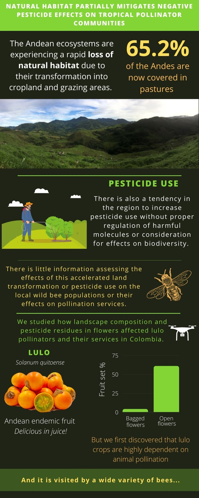
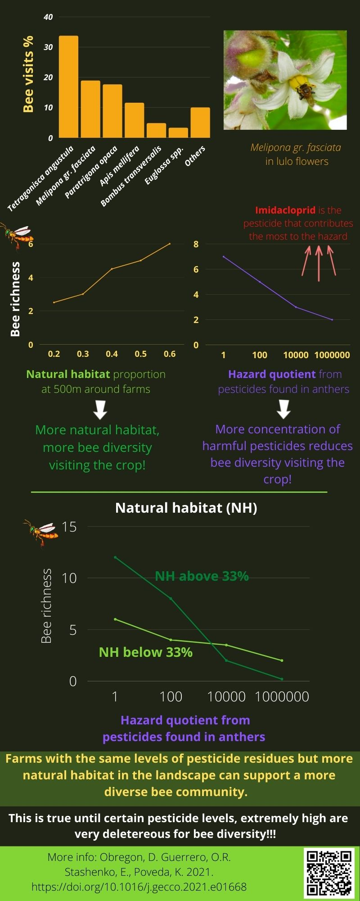
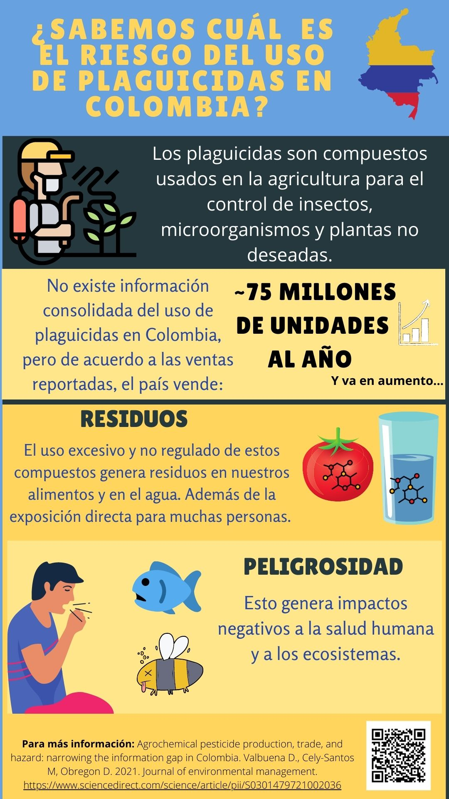
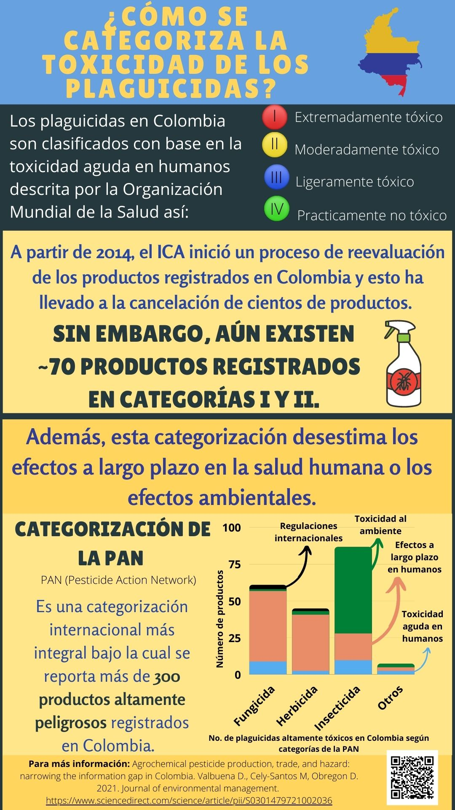
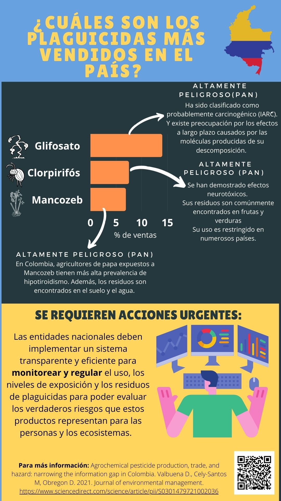
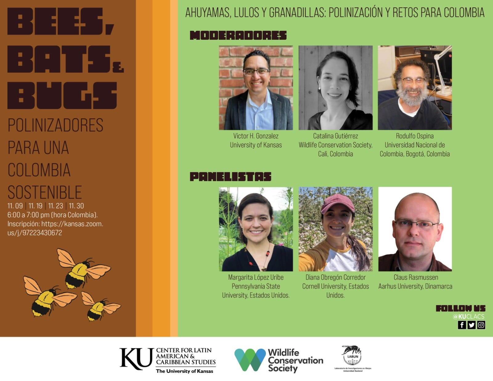

Stingless bee beekeeping and conservation
Stingless bees (Meliponini: Apidae) are eusocial bees that form the most abundant and diverse group of bees throughout the tropics. These bees play a key role in the reproduction of many wild plants, as well as being important flower visitors of multiple crops. Indigenous and local communities use the honey, pollen, cerumen, and propolis from stingless bees for their own consumption or to sell in local markets as food or medicine.
Stingless bees, as well as other wild bees, are suffering the negative impact of the loss of natural habitat, pesticides, and pathogens. Moreover, these bees are highly dependent on the forest because most of the species nest in cavities of old trees. We can help to protect them by protecting their natural habitat, reducing the use of pesticides, and helping communities to make a rational use of these colonies.

Workshops with cattle ranchers and kids on how to use hives to sustainably keep stingless bees in Casanare, Colombia
Keeping and protecting Melipona favosa, an endangered stingless bee species
Melipona favosa is a species of stingless bee distributed in lowlands and mangrove areas of South America and Panama. They nest in small cavities of living or dead trees. In addition to deforestation, another problem that threatens their populations are “honey hunters”, people who cut down trees and destroy nests to extract honey.
Melipona favosa, left: collected specimen, right: foraging on Vernonanthura patens
I have voluntarily supported the the organization ABC in Casanare, Colombia with their project: “Miel de la biodiversidad” which is committed to conserving the flooded savannas of Casanare and the Llanero culture, through the sustainable production of honey from Melipona favosa.
With ABC, we have held workshops to teach the community to keep and reproduce stingless bees in hives, to sustainably harvest honey and other products, and to reforest with plants for foraging and nesting of this species. Likewise, I have collaborated in developing a series of videos and a manual to disseminate this knowledge with local communities.
Transference of a natural nest of Melipona eburnea from an old log to a permanent hive, Photo: Natalia Roa
Hector Abril is a traditional stingless bee beekeeper and the source of inspiration and wisdom to protect bees in Casanare, Colombia. Photo: Natalia Roa
Infographics
Recently, I have been working on building infographics to share my work with a broader audience. I make them in English and Spanish and I share them on Twitter, Facebook, and Whatsapp.
- This one is about the first publication of my Ph.D. and it is the first peer-review publication showing evidence on how the loss of forest and pesticides are affecting bees in Colombia.

- In this work, I collaborated with Diego Valbuena from Wageningen University and Marcela Cely-Santos from the Humboldt Institute to analyze the gaps and the potential risks associated to the current pesticide classification in Colombia (Inforgraphic in Spanish).

Talks
Even though, public speaking is very challenging for me, I am happy to share my work in talks and conferences, specially those who target broader audiences, students, and policy makers.
- In this one for example, I was invited by the University of Kansas to talk about my work in Lulo crops and I was very honored to share the space with Dr. Margarita Lopez-Uribe and Dr. Clauss Rasmussen

Tattoos for biodiversity
Team: Eugenio Valderrama Escallón, Maria José Arrieta Mosquera, Diana Obregón Corredor, Juan Pablo Calderón, Laura Giraldo Serna, and Ana María Porras Corredor
Funded by The European Society for Evolutionary Biology (ESEB)
Although Colombia is embedded in the Neotropical biodiversity hotspot, its species richness remains underestimated due to insufficient surveying and internal conflicts threatening its diversity. To reach young urban adults in Colombia, we will use two media popular with this age group - tattoo art and social media - to communicate the evolutionary and ecological importance of threatened, recently described, endemic or traditionally used species of flora and fauna, and the relevant social dynamics jeopardizing them. We will use and support the ongoing initiatives of tattoo artists that include elements of biodiversity in their work. Combining tattoo art with scientific expertise opens possibilities to reach communities rarely considered in public engagement with science. The inclusion of both biological and social aspects relevant to the protection, use and understanding of the selected species will allow us to increase awareness and appropriation of biodiversity that will help to ameliorate its current threats.
More info coming in the next days…
Media
I was lucky enough that Andrew Wight, a journalist covering #GlobalSouthScience, tech, and development decided to make a note about my work in Forbes :)
I had the great opportunity to discuss about the factors that threaten bees and pollination services in the Podcast El asunto: Zumbidos de esperanza